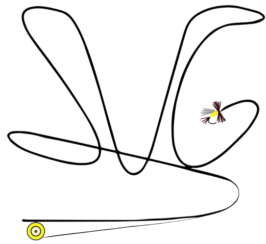

Growing up an avid outdoorsman, Jake began teaching himself the art of fly fishing at the age of twelve on the Saluda River trout. After graduating from high school, he moved west to Colorado. There he fished the famed Frying Pan, Blue, Colorado and Arkansas Rivers. It was not long before he began guiding for a local shop where he guided guests on upwards of 100 trips a season. While living in Summit County, Colorado he spent nearly 300 days a year on the water. In 2003, Jake returned to South Carolina. Jake works full time at Barron's Outfitters in downtown Columbia, SC where he has built a reputation as the "go to guy" for tips and gear recommendations for the area. In September of 2013, he finally was able to realize his dream of starting a guide service on the waters he grew up on when he started Saluda Valley Guides, LLC.Jake married his wife, Lori, in 2013, and they have four boys.